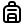
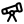
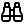

Real space science, told just for you.
Pick a planet, a star, or a wild idea — we'll turn a grown-up science paper into a story you can read tonight.

A Baby Planet Was Caught Making Rings Around Its Star!
Original paper by Dr. Aisha Okafor (Caltech), Prof. Niels Sørensen (Leiden Observatory), and Dr. Mira Patel (NASA Goddard) · The Astrophysical Journal, 2024
Scientists pointed a giant telescope in Chile at a young star called PDS 70 and spotted dusty rings — the very stuff that planets are built from. Inside one of the gaps, a tiny brand-new world is sweeping the lane clean!

Ages 7–10Today in space
See it all
Sky tonight Thu · 9 PMWaxing Gibbous
87% bright · rises 4:12 PM
Planets you can spot:
- Jupiter — high in the south, super bright
- Mars — orange glow in the east at 10 PM
- Saturn — low west, watch before 8 PM
- Venus — morning star, look east at dawn

Open the plannerNebula
say it like: NEB-yoo-luh
A giant cloud of gas and space-dust floating between the stars. Some are the leftovers from a star that went BOOM. Others are nurseries where brand new stars are being born!

"If a black hole eats a star, where does the star go?"
— Maya, age 8, from Toronto

Dr. Ravi Bhatt
Astrophysicist · MIT Kavli Institute
"Great question, Maya! The star doesn't really disappear — it gets stretched into a long, thin ribbon of glowing gas (we call it 'spaghettification' — yes, really!) and spirals around the black hole, getting hotter and brighter until..."
Read the full answer